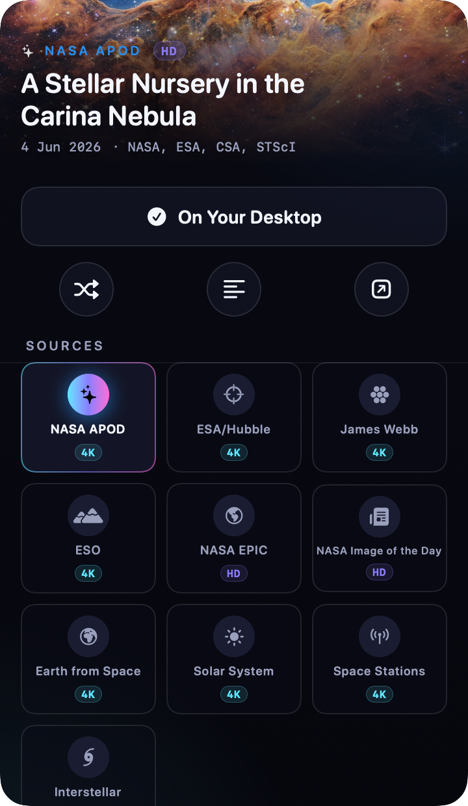

Caelum quietly keeps the latest NASA Astronomy Picture of the Day as your wallpaper — with 10 stellar sources and a cinematic ambient mode. All from a single point of light in your menu bar.
Loading today's Astronomy Picture of the Day…
Click the star in your menu bar and a panel of frosted black glass floats over your desktop. Today's image fills the hero; the interface quietly re-tints to wear its colours. One tap sets it as your wallpaper.

Every day, Caelum fetches NASA's Astronomy Picture of the Day and sets it as your wallpaper — automatically, in the background.
APOD is the star — joined by ESA/Hubble, James Webb, ESO, NASA EPIC, Bing, Wikimedia and a hand-curated gallery.
When you step away, Caelum drifts through your gallery full-screen with a slow ken-burns glide — a planetarium for your Mac.
No Dock icon, no windows, no clutter. Just a single quiet glyph that opens the whole cosmos.
Caelum extracts the dominant colour of each image and tints its accents to match — every image gives the app a new mood.
No accounts, no tracking, no analytics. Images come straight from public APIs. The whole thing is MIT-licensed on GitHub.
Switch sources from the strip inside the panel. Everything works out of the box — no API keys required.
Set an idle timer and Caelum takes over every display with a slow, cinematic cross-fade through your cached gallery — minimal metadata in instrument typography, the rest is pure cosmos. Move the mouse to return.
Grab the latest Caelum.zip from GitHub Releases and unzip it into /Applications.
Caelum is free and open source, so it isn't notarized. On first launch, right-click the app and choose Open to get past Gatekeeper.
Look for the orbit glyph in your menu bar. Click it, pick a source, and you're flying.
DEMO_KEY is rate-limited — drop a free personal key into Settings for higher limits (takes 30 seconds at api.nasa.gov).